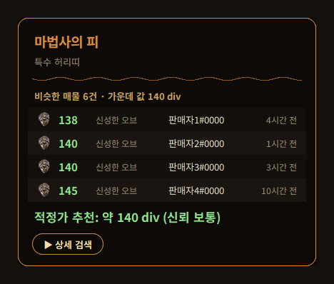
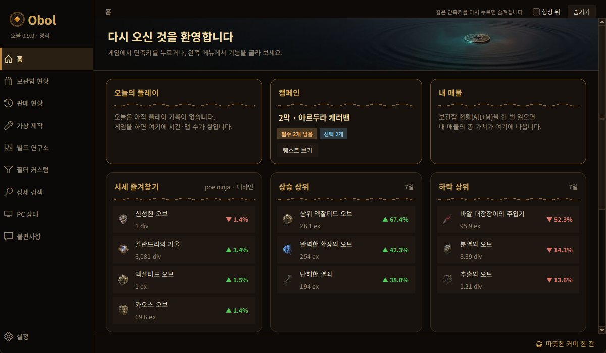
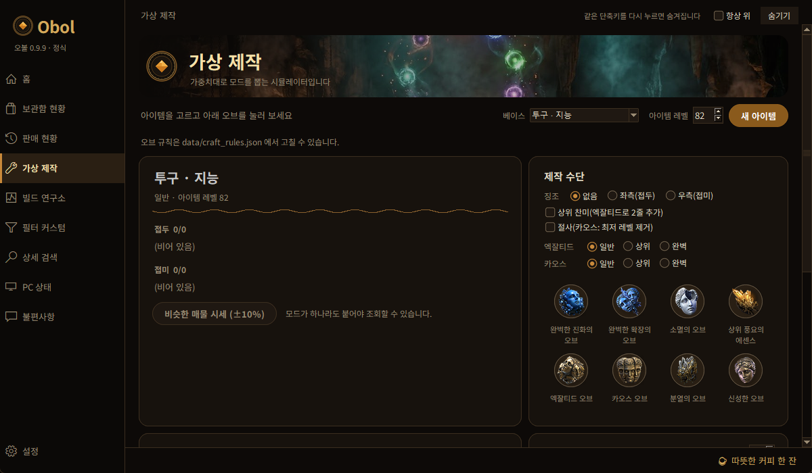

카카오 POE2를 위한 한글 시세 조회기 — 아이템에 마우스를 올리고 Alt+D
한국 서버(카카오)와 글로벌 서버(pathofexile.com) 시세 조회를 지원합니다. 글로벌은 이번이 첫 지원이라 실제 영어 클라이언트에서의 확인이 부족합니다 — 안 되는 점은 불편사항으로 알려 주세요.
Obol 다운로드 (Windows) exe 파일 하나 · 설치 필요 없음 · 무료 · 항상 최신 버전이 받아집니다
Alt+D 시세 조회 — 매물 줄에 마우스를 올리면 오른쪽에 그 아이템의 옵션이 뜹니다(판매자 이름은 가렸습니다).| Alt+D | 시세 조회. 게임에서 아이템에 마우스를 올리고 누르면 한글 그대로 카카오 거래소의 비슷한 매물 가격이 게임 위에 뜹니다. 줄에 마우스를 올리면 그 매물의 옵션, 클릭하면 내 아이템과 나란히 비교합니다. 희귀·고유 장비는 비슷한 매물로 '적정가' 한 줄 추천도 붙습니다(추천일 뿐이고 등록가 기준 — 가격은 직접 정하세요). |
| Alt+C | 가상 제작 — 접두·접미를 가중치대로 뽑아 보고, 오브 아이콘을 눌러 제작을 시험하고, 만든 아이템의 비슷한 매물 시세까지 봅니다. |
| Alt+B | 빌드 연구소 — PoB 코드·pobb.in·poe.ninja 링크의 유명 빌드를 내 빌드와 견주고, 맞출 옵션을 골라 시세·제작으로 이어 갑니다. 액체 감정 찾기도 있습니다. 주얼·장비를 끼웠을 때의 DPS·방어 변화는 PoB 계산 엔진으로 계산합니다(PoB 설치 필요 없음, 처음 한 번 약 5MB 내려받기). |
| Alt+M / N | 보관함 현황(내 매물 총 가치, 매물별 '적정가 점검'), 판매 현황(정확한 판매 시각·가격) |
| 홈 | 오늘의 플레이, 지금 마을과 남은 퀘스트, 시세 즐겨찾기, 일주일 상승·하락 상위, PC 상태가 한눈에 보입니다. |
| 퀘스트 | 마을·지역 퀘스트 안내. 새 마을이나 지역에 들어가면 그곳에서 할 일·보상·다음 이동을 게임 위 작은 글씨로 보여 줍니다(필수 · ★추천 · 선택). ✕를 누르기 전엔 꺼지지 않고, 끝낸 퀘스트는 체크하면 다음에 빠집니다. 보상 수치는 외부 공개 자료 기준이라 카카오 서버에서는 확인하지 못했습니다. |
| PC 상태 | CPU·메모리·GPU·VRAM 실시간 수치와 PoE2 메모리 경고, 메모리를 많이 쓰는 프로그램을 골라 닫는 메모리 정리(필수 프로세스는 절대 안 닫음). Obol 창을 숨기거나 최소화하면 항상 위 작은 표시줄로 바뀝니다. |
| 그 밖에 | 죽었을 때 직전 장면 다시 보기와 원인 추정, 게임을 끄면 오늘의 요약, 자리비움 대기 화면, 필터 커스텀(Alt+F), 스킨, 불편사항 보내기 |


가상 제작 — 오브를 눌러 제작을 시험합니다. 쓴 횟수가 아이콘 위에 쌓입니다.꼭 읽어 주세요. Obol 은 비공식 팬 도구입니다. 게임에는 아이템 복사 키(Ctrl+C)만 보내고 게임 파일·메모리는 읽거나 고치지 않지만, Grinding Gear Games 나 카카오게임즈가 허용한다는 확인은 받지 못했습니다. 계정 안전을 보장하지 않으며 사용은 본인 책임입니다.
Get-FileHash Obol.exe 로 확인할 수도 있습니다.안전하다고 말씀드릴 수 없습니다. 위의 안내처럼 게임 파일·메모리를 건드리지 않고 키는 복사 한 번만 보내지만, 허용 여부는 확인되지 않았습니다. 판단은 본인 몫입니다.
카카오 거래소 호출 한도가 IP별이라 연속 조회하면 걸립니다. Obol 은 한도 직전에 멈추고 남은 시간을 알려 줍니다. 조회 간격을 두세요.
시세는 등록가라 장난 매물이 섞입니다(편차 경고가 뜹니다). 안 읽히면 관리자 권한 허용 여부와 전체 화면 독점 여부를 먼저 확인하고, 불편사항 보내기로 알려 주세요.
소스는 공개하지 않습니다. 접속처는 카카오 거래소, poe.ninja, poe2db, GitHub(업데이트 확인, 정밀 계산 묶음 내려받기)이며, '불편사항 보내기'를 누를 때만 그 글을 개발자에게 전송합니다. 채팅 단축키(F5 등)를 설정하면 그 키에서 /명령어 한 줄을 입력합니다.
"죽었을 때 직전 장면 보기"를 켜 두면, 게임 창이 맨 앞일 때만 화면을 작게 줄여 최근 12초를 메모리에만 기억합니다(디스크에 쓰지 않고 외부로 보내지 않음). 죽었을 때 그 장면을 작은 창으로 보여 주고, 사용자가 '저장'을 누를 때만 파일로 남깁니다. 게임 파일·메모리는 읽지 않으며 설정 탭에서 끌 수 있습니다. 죽은 뒤 '원인 추정'은 ① 게임이 스스로 쓰는 로그 파일의 사망 직전 60초 ② 화면 왼쪽 아래 생명력·보호막 숫자 부분을 윈도 내장 글자 읽기로 읽은 값을 봅니다. 게임에 기록되지 않는 '진짜 원인'이 아니라 추정입니다.
아니요. Path of Building(PoE2)의 계산 모듈(MIT 라이선스)만 추린 약 5MB 묶음을 처음 한 번 GitHub 에서 내려받아 Obol 이 직접 돌립니다. poe.ninja 캐릭터 링크로 불러온 내 빌드 기준이고 poe.ninja 데이터는 실시간이 아니라서 갱신 시각을 같이 보여 줍니다. 계산 못 하는 줄은 '계산 못 함'으로 두며, 실전 DPS 와 다를 수 있습니다.
수치는 읽기만 합니다(관리자 권한 필요 없음). '메모리 정리'는 내가 체크한 프로그램만, 무엇이 닫히는지 보여 주는 확인 창을 거친 뒤에 닫습니다. Windows 필수 프로세스와 Obol 자신은 목록에 나오지 않고, 편집기·Claude 같은 주의 표시가 붙은 것은 경고에 동의해야만 닫힙니다. 저장하지 않은 작업은 사라질 수 있으니 확인 창을 읽어 주세요.
무료이고 기능 제한이 없습니다. 후원은 도구 안의 ☕ 따뜻한 커피 한 잔에서 자유롭게 하실 수 있습니다.
A price checker for Path of Exile 2 on the Kakao Games (Korea) server — hover an item and press Alt+D
The current release supports both the Korean (Kakao Games) server and the Global server (pathofexile.com) for price checks (choose in Settings → Game server, then restart). Global support is new and not yet verified against every item text of the English client — please report anything that fails from the feedback tab. Stash, sales and My shop work with Kakao accounts only. Obol's own screens can be shown in English, Japanese or Chinese (Settings → Language), but item, skill and area names are shown with the game's English names. This page is machine-translated from Korean and has not been reviewed by a native speaker. If something reads wrong, the Korean text is the original.
Download Obol (Windows) One exe · no installer · free · always downloads the latest version| Alt+D | Price check. Hover an item in game and press it: prices of similar listings on the Kakao trade site appear over the game. Hover a row to see that listing's mods; click it to compare side by side with your item. Rare and unique gear also gets a one-line "fair price" suggestion from similar listings (a suggestion only, based on asking prices — set your own price). |
| Alt+C | Crafting simulator — roll prefixes and suffixes by weight, click orb icons to try crafting, and look up market prices for similar items to what you made. |
| Alt+B | Build lab — compare popular builds (PoB code, pobb.in or poe.ninja link) with your own, pick mods to aim for, and continue into price lookup and crafting. Also finds Liquid Emotions. DPS and defence changes from equipping jewels or gear are calculated with the PoB calculation engine (no PoB install needed; a one-time ~5 MB download). |
| Alt+M / N | Stash status (total value of your listings, per-listing "fair price check") and sales status (exact sale times and prices). |
| Home | Today's play, the current town and remaining quests, price favourites, weekly top risers and fallers, and PC status at a glance. |
| Quests | Town and area quest guide. When you enter a new town or area, small text over the game shows what to do there, the rewards and where to go next (required · ★ recommended · optional). It stays until you press ✕, and quests you tick off are skipped next time. Reward numbers come from public external sources and have not been verified on the Kakao server. |
| PC status | Live CPU, memory, GPU and VRAM figures, a PoE2 memory warning, and a memory cleaner that closes only the programs you tick (essential processes are never closed). When you hide or minimise the Obol window it turns into an always-on-top mini bar. |
| And more | Replay of the moments before you died with a cause estimate, a daily summary when you quit the game, an idle screen, filter customiser (Alt+F), skins, and a way to send feedback. |
Please read. Obol is an unofficial fan tool. It only sends the item-copy key (Ctrl+C) to the game and does not read or modify game files or memory, but we have no confirmation that Grinding Gear Games or Kakao Games allow it. We do not guarantee account safety; use is at your own risk.
Get-FileHash Obol.exe.We cannot say it is safe. As described above, Obol does not touch game files or memory and sends only a single copy keystroke, but whether it is allowed has not been confirmed. The decision is yours.
The Kakao trade site rate-limits per IP, so repeated lookups hit the limit. Obol stops just before the limit and tells you how long to wait. Leave a gap between lookups.
Prices are asking prices, so troll listings get mixed in (a spread warning appears). If an item is not read, first check that you allowed administrator permission and that the game is not in exclusive fullscreen, then tell us via "Send feedback".
The source is not public. It connects to the Kakao trade site, poe.ninja, poe2db and GitHub (update check and the precise-calculation bundle), and sends text to the developer only when you press "Send feedback". If you set chat hotkeys (e.g. F5), that key types a single /command line.
If you turn on "replay before death", it keeps the last 12 seconds in memory only, scaled down and only while the game window is in front (nothing is written to disk or sent anywhere). When you die it shows that moment in a small window, and saves a file only if you press "Save". It does not read game files or memory, and you can turn it off in Settings. The after-death "cause estimate" looks at ① the 60 seconds before death in the log file the game writes itself and ② the life/shield numbers at the lower left of the screen read with Windows' built-in text recognition. It is an estimate, not the real cause, which the game does not record.
No. Obol downloads a ~5 MB bundle containing only the calculation modules of Path of Building (PoE2) (MIT licence) from GitHub once and runs it itself. It works from your build loaded through a poe.ninja character link; poe.ninja data is not real-time, so the update time is shown. Lines it cannot calculate are marked "cannot calculate", and results can differ from real in-game DPS.
The figures are read-only (no administrator rights needed). "Memory cleaning" closes only the programs you tick, after a confirmation window shows what will be closed. Essential Windows processes and Obol itself never appear in the list, and anything flagged with a caution (editors, Claude, etc.) is closed only if you accept the warning. Unsaved work can be lost, so please read the confirmation.
It is free with no feature limits. If you wish, you can support it with ☕ "a warm cup of coffee" inside the tool.
カカオゲームズ版 Path of Exile 2 向けの相場チェッカー — アイテムにマウスを乗せて Alt+D
現在のバージョンは相場検索で韓国(カカオゲームズ)サーバーとグローバルサーバー(pathofexile.com)の両方に対応しています(設定 → ゲームサーバーで選択し、再起動)。グローバル対応は初版で、英語クライアントのすべてのアイテム文での確認はできていません。読み取れない場合はご意見タブでお知らせください。保管庫・販売状況・マイショップはカカオアカウント専用です。Obol の画面自体は英語・日本語・中国語で表示できます(設定 → 言語)が、アイテム・スキル・エリア名はゲーム内の英語名で表示されます。このページは韓国語から機械翻訳したもので、ネイティブによる確認は受けていません。不自然な点があれば韓国語の原文が正です。
Obol をダウンロード (Windows) exe ファイル1つ · インストール不要 · 無料 · 常に最新版がダウンロードされます| Alt+D | 相場チェック。ゲーム内でアイテムにマウスを乗せて押すと、カカオのトレードサイトにある似た出品の価格がゲーム画面の上に表示されます。行にマウスを乗せるとその出品のオプション、クリックすると自分のアイテムと並べて比較します。レア・ユニーク装備には、似た出品から「適正価格」の推奨が1行付きます(あくまで推奨で、出品価格が基準です — 価格はご自身で決めてください)。 |
| Alt+C | クラフトシミュレーター — 接頭辞・接尾辞を重み通りに抽選し、オーブのアイコンを押してクラフトを試し、作ったアイテムに似た出品の相場まで確認できます。 |
| Alt+B | ビルドラボ — PoB コード・pobb.in・poe.ninja のリンクにある有名ビルドを自分のビルドと比較し、狙うオプションを選んで相場・クラフトにつなげます。Liquid Emotions の検索もあります。ジュエルや装備を着けた時の DPS・防御の変化は PoB 計算エンジンで計算します(PoB のインストール不要、初回のみ約5MBをダウンロード)。 |
| Alt+M / N | 保管庫の状況(出品の総価値、出品ごとの「適正価格チェック」)、販売状況(正確な販売時刻・価格) |
| ホーム | 今日のプレイ、今いる町と残りのクエスト、相場のお気に入り、1週間の上昇・下落ランキング、PC の状態が一目で分かります。 |
| クエスト | 町・エリアのクエスト案内。新しい町やエリアに入ると、そこでやること・報酬・次の移動をゲーム画面上の小さな文字で表示します(必須 · ★おすすめ · 任意)。✕を押すまで消えず、終えたクエストにチェックを入れると次回から表示されません。報酬の数値は外部の公開資料に基づいており、カカオサーバーでは確認できていません。 |
| PC の状態 | CPU・メモリ・GPU・VRAM のリアルタイム数値と PoE2 のメモリ警告、チェックしたプログラムだけを閉じるメモリ整理(必須プロセスは絶対に閉じません)。Obol のウィンドウを隠す・最小化すると、常に手前に出る小さな表示バーに切り替わります。 |
| その他 | 死亡直前の場面の再生と原因の推定、ゲーム終了時の今日のまとめ、離席時の待機画面、フィルターカスタム(Alt+F)、スキン、フィードバック送信 |
必ずお読みください。Obol は非公式のファンツールです。ゲームにはアイテムコピーキー(Ctrl+C)だけを送り、ゲームのファイルやメモリは読み取りも変更もしませんが、Grinding Gear Games やカカオゲームズが許可しているという確認は得られていません。アカウントの安全は保証できず、使用は自己責任です。
Get-FileHash Obol.exe でも確認できます。安全とは言えません。上記のとおりゲームのファイルやメモリには触れず、キーもコピーを1回送るだけですが、許可されているかどうかは確認できていません。判断はご自身でお願いします。
カカオのトレードサイトの呼び出し上限は IP ごとなので、続けて検索すると引っかかります。Obol は上限の直前で止まり、残り時間を表示します。検索の間隔を空けてください。
相場は出品価格なので、いたずらの出品が混ざります(ばらつきの警告が出ます)。読み取れない場合は、まず管理者権限の許可と排他的フルスクリーンでないことを確認し、「フィードバック送信」でお知らせください。
ソースは公開していません。接続先はカカオのトレードサイト、poe.ninja、poe2db、GitHub(更新確認と精密計算パックのダウンロード)で、「フィードバック送信」を押したときだけその文章を開発者に送ります。チャットのショートカット(F5 など)を設定すると、そのキーで /コマンド を1行入力します。
「死亡直前の場面を見る」をオンにすると、ゲームウィンドウが最前面のときだけ画面を小さく縮小して直近12秒をメモリ上にだけ保持します(ディスクへの書き込みも外部への送信もありません)。死亡時にその場面を小さなウィンドウで表示し、「保存」を押したときだけファイルに残します。ゲームのファイルやメモリは読み取らず、設定タブで切れます。死亡後の「原因の推定」は、① ゲーム自身が書くログファイルの死亡直前60秒、② 画面左下の生命力・シールドの数値を Windows 標準の文字認識で読み取った値、を見ます。ゲームが記録しない「本当の原因」ではなく推定です。
いいえ。Path of Building(PoE2)の計算モジュール(MIT ライセンス)だけを抜き出した約5MBのパックを初回に一度 GitHub からダウンロードし、Obol が自分で実行します。poe.ninja のキャラクターリンクで読み込んだ自分のビルドが基準で、poe.ninja のデータはリアルタイムではないため更新時刻を併せて表示します。計算できない行は「計算不可」とし、実際の DPS とは異なる場合があります。
数値は読み取るだけです(管理者権限は不要)。「メモリ整理」は、チェックしたプログラムだけを、何が閉じられるかを示す確認画面を経てから閉じます。Windows の必須プロセスと Obol 自身は一覧に出ず、エディタや Claude など注意表示が付くものは警告に同意した場合だけ閉じます。保存していない作業は失われることがあるので、確認画面をよく読んでください。
無料で、機能制限もありません。ご支援は、ツール内の ☕「温かいコーヒー一杯」から自由にしていただけます。
面向 Kakao Games(韩服)的 Path of Exile 2 价格查询工具 — 把鼠标放在物品上按 Alt+D
当前版本的价格查询同时支持韩服(Kakao Games)和国际服(pathofexile.com)(在设置 → 游戏服务器中选择并重启)。国际服支持是首个版本,尚未对英文客户端的所有物品文本做过验证,如有无法识别的情况请通过反馈页告知。仓库、销售状况和我的商店仅限 Kakao 账号。Obol 自身的界面可以显示为英语、日语或中文(设置 → 语言),但物品、技能和地区名称会以游戏内的英文原名显示。本页由韩语机器翻译而成,未经母语者审校。如有出入,以韩语原文为准。
下载 Obol (Windows) 仅一个 exe 文件 · 无需安装 · 免费 · 始终下载最新版本| Alt+D | 价格查询。在游戏中把鼠标放在物品上按下,Kakao 交易网站上类似挂牌的价格会显示在游戏画面上。鼠标放在某一行上可看到该挂牌的词缀,点击则与自己的物品并排对比。稀有和传奇装备还会根据类似挂牌给出一行“合理价格”建议(仅为建议,以挂牌价为准 — 价格请自行决定)。 |
| Alt+C | 打造模拟器 — 按权重抽取前缀和后缀,点击点金石图标试着打造,还能查看与所打造物品类似的物品的市场价格。 |
| Alt+B | 构筑实验室 — 将 PoB 代码、pobb.in 或 poe.ninja 链接中的热门构筑与自己的构筑对比,选择想要的词缀并衔接到价格查询和打造。也可查找 Liquid Emotions。装备珠宝或装备后的 DPS 和防御变化由 PoB 计算引擎计算(无需安装 PoB,首次需下载约 5MB)。 |
| Alt+M / N | 仓库状况(挂牌总价值、逐件“合理价格检查”)和销售状况(精确的售出时间与价格) |
| 主页 | 今日游戏情况、当前城镇与剩余任务、价格收藏、一周涨跌榜以及电脑状态,一目了然。 |
| 任务 | 城镇与地区任务指引。进入新的城镇或地区时,会以游戏画面上的小字显示在那里要做的事、奖励和下一步去向(必做 · ★推荐 · 可选)。点击 ✕ 之前不会消失,勾选完成的任务下次会被省略。奖励数值基于外部公开资料,未在 Kakao 服务器上验证。 |
| 电脑状态 | 实时显示 CPU、内存、GPU、显存数值和 PoE2 内存警告,以及只关闭您勾选程序的内存清理(绝不会关闭系统必需进程)。隐藏或最小化 Obol 窗口时,会变成始终置顶的小型状态栏。 |
| 其他 | 回放死亡前的画面并给出原因推测、退出游戏时的当日总结、挂机待机画面、过滤器定制(Alt+F)、皮肤、发送反馈 |
请务必阅读。Obol 是非官方的粉丝工具。它只向游戏发送物品复制键(Ctrl+C),不读取也不修改游戏文件或内存,但我们没有得到 Grinding Gear Games 或 Kakao Games 允许使用的确认。我们不保证账号安全,使用风险自负。
Get-FileHash Obol.exe 检查文件是否与上面的哈希一致。我们不能说它是安全的。如上所述,它不接触游戏文件和内存,只发送一次复制按键,但是否被允许尚未得到确认。请自行判断。
Kakao 交易网站的调用上限按 IP 计算,连续查询就会触发。Obol 会在达到上限之前停下,并告诉您还需等待多久。请在查询之间留出间隔。
价格是挂牌价,所以会混入恶搞挂牌(会出现差异警告)。如果读取不到,请先确认已允许管理员权限且游戏不是独占全屏,然后通过“发送反馈”告诉我们。
源代码不公开。连接的地方有 Kakao 交易网站、poe.ninja、poe2db 和 GitHub(检查更新、下载精确计算包),只有在您点击“发送反馈”时才会把文字发送给开发者。如果设置了聊天快捷键(如 F5),该键会输入一行 /命令。
开启“查看死亡前画面”后,仅在游戏窗口位于最前面时,把画面缩小并将最近 12 秒只保存在内存中(不写入磁盘,也不发送到外部)。死亡时会在小窗口中显示那一刻的画面,只有在您点击“保存”时才会保存为文件。它不读取游戏文件和内存,可在设置中关闭。死亡后的“原因推测”会查看 ① 游戏自己写入的日志文件中死亡前 60 秒的内容,② 用 Windows 内置文字识别读取的屏幕左下角生命/护盾数值。这只是推测,并非游戏没有记录的真正原因。
不需要。Obol 只会在首次使用时从 GitHub 下载一个约 5MB、仅含 Path of Building(PoE2)计算模块(MIT 许可证)的包,并自行运行。它基于通过 poe.ninja 角色链接载入的您的构筑;poe.ninja 数据并非实时,所以会同时显示更新时间。无法计算的行会标注“无法计算”,结果可能与游戏内实际 DPS 不同。
数值仅为读取(无需管理员权限)。“内存清理”只会关闭您勾选的程序,并且会先弹出确认窗口显示将关闭什么。Windows 必需进程和 Obol 自身不会出现在列表中,带有注意标记的程序(编辑器、Claude 等)只有在您接受警告后才会关闭。未保存的工作可能丢失,请仔细阅读确认窗口。
免费,没有功能限制。如果您愿意,可以通过工具内的 ☕“一杯温暖的咖啡”自由赞助。